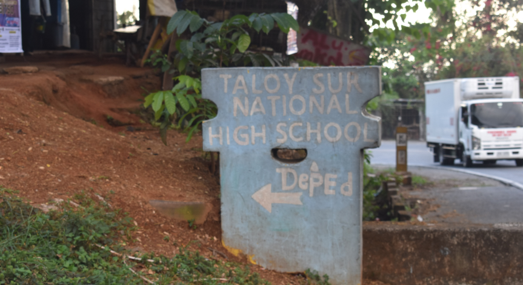
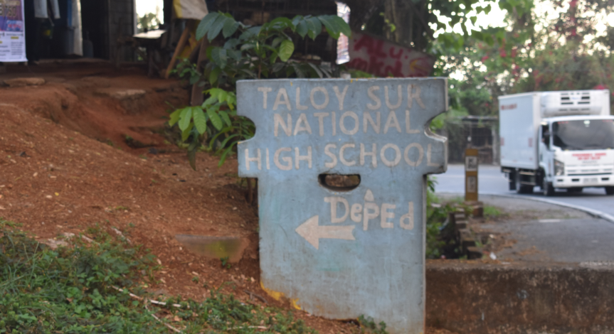
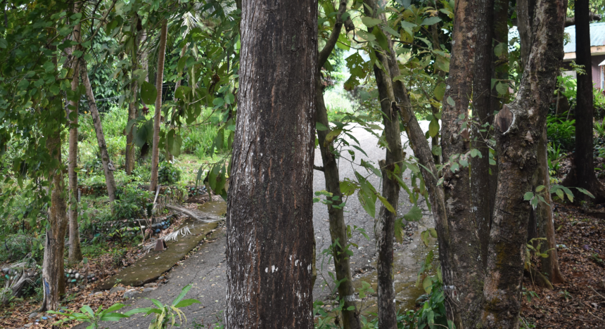
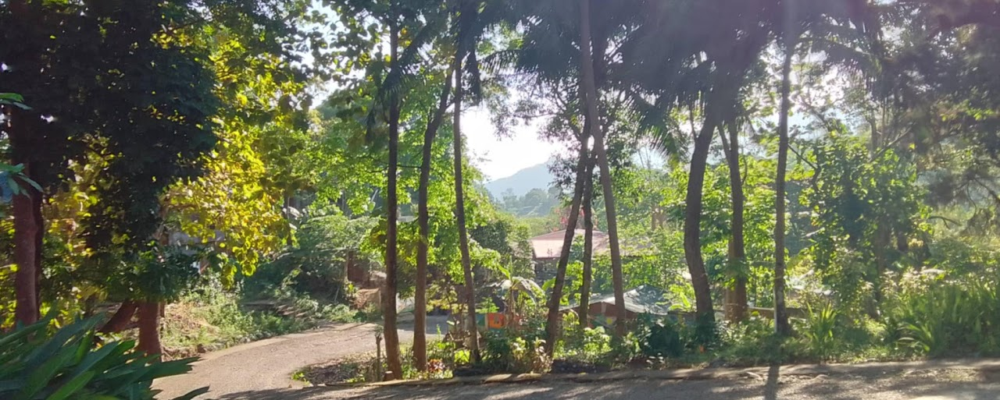
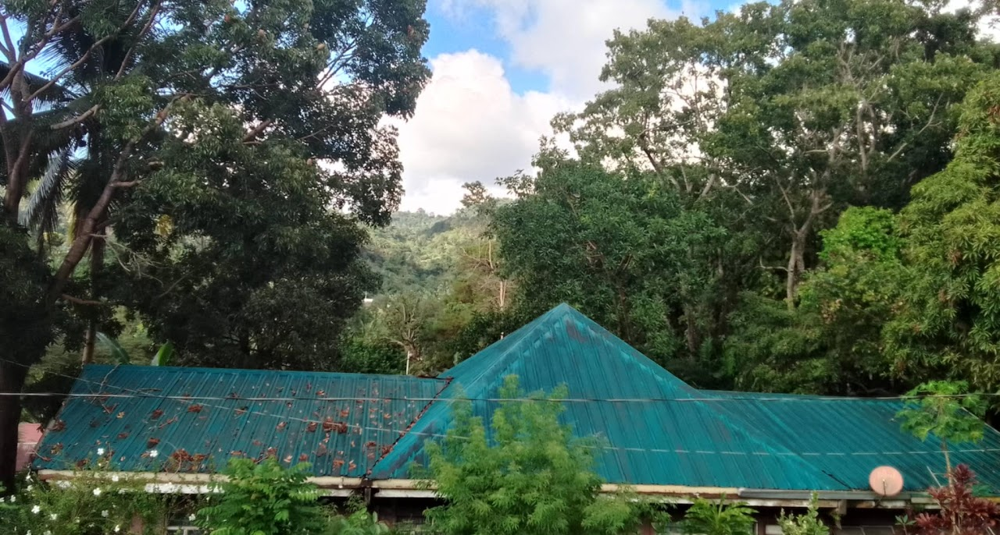
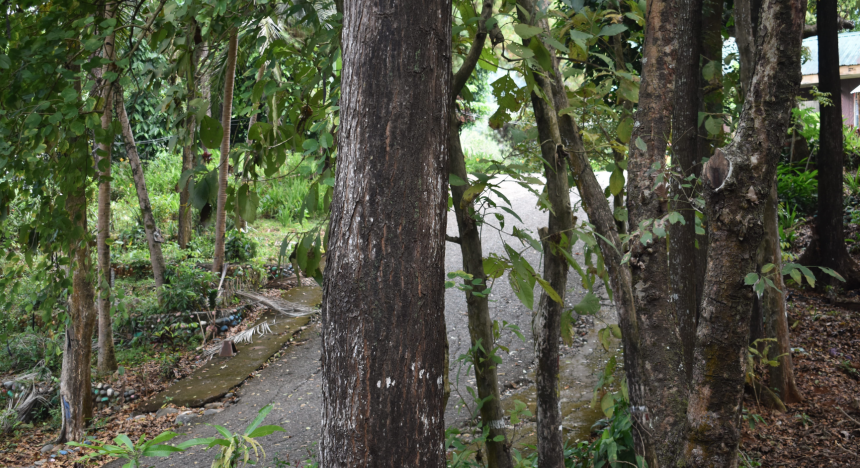
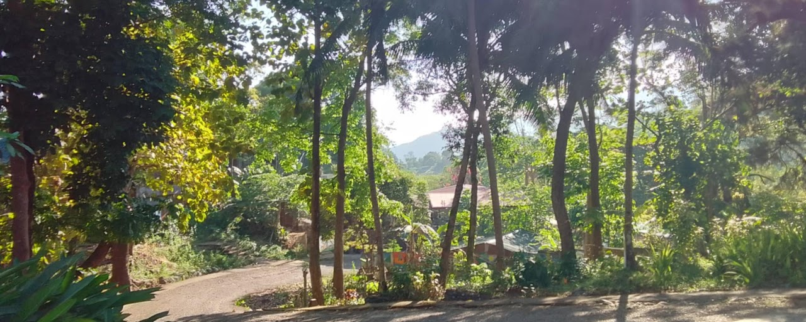
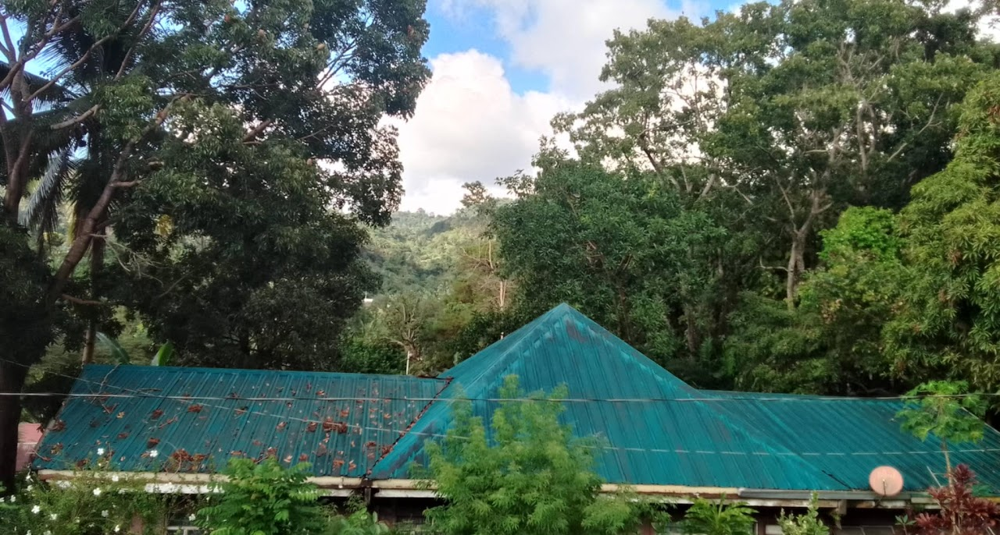

BRIEF HISTORY OF THE SCHOOL SITE

Grade 8 and Grade 10 Classrooms

Guard's House

Home Economics Room
.jpg)
Senior High School Building (New Site)

Admin Office and Stairs Leading to Grade 8 and 10 Classrooms

Admin Office
.png)
Grade 7-A and Grade 9-B Building (Two Classrooms)

Grade 7-B and Grade 9-A Classrooms

Hallway leading to the Canteen and Social Hall

ICT and Science Building

Main Faculty and School Clinic Building

Overview of the Driveway Leading to the ICT and Science Building

School Clinic entrance in the Main Faculty Building

School Ground

School Ground with the Admin and Main Faculty Building

School Library
.jfif)
School Library

TLE Room

Social Hall (Back)
.jpg)
Social Hall (Front)

ICT Room
Taloy Sur National High School is located in Duplac, Taloy Sur, Tuba, Benguet, just a few meters from Marcos Highway near the boundary of La Union and Benguet. The school enjoys a relatively warmer climate compared to other parts of the province. It offers Junior High School at the old site and the General Academic Strand (GAS) for Senior High School at a separate new campus. The school has essential facilities such as a library, science laboratory, ICT room, TLE building, comfort rooms, a canteen, an administrative office, and a multi-purpose hall.
HISTORY OF THE SCHOOL
Duplac, Sur, Tuba, Benguet, where Taloy Sur National High School stands, is within the territorial boundary of the municipality of Tuba since time immemorial.
A time came when the population of the area warranted the establishment of a school, so the local folks with their elected barangay officials made a move for the government to educate its people. The creation of primary school was supposedly to be initiated and maintained by the Tuba municipality; however, due to the distance and hardship of reaching the municipality, the people opted to ask for help from the municipality of Pugo. Thus, it was the Pugo municipality that initiated and maintained the said school.
Sometime in 1976, during the Martial Law, the reign of former president Ferdinand Marcos, the Marcos Park Complex came into existence. Golf course, Tennis court, Club houses, Marcos Monument, buildings and amenities were built under the Philippine Tourism Authority occupying a lot of more or less 355 hectares of farmland, including the area where the former Palina Community stood.
The establishment of Marcos Park occupying the original school site did not hinder the continuous operation of the school, thus transferring the site more or less one kilometre below, nearer to Barangay Palina, Pugo, La Union.
In 1986, during the collapse of the Marcos regime, old folks of Taloy Sur tried to claim their lands back because, according to them, their farms were not legally sold but were sold by force, and the payment given later was much lower than the actual cost of their lots.
Negotiations between the Taloy Folks and PTA authorities started through the leadership of Mrs. Rose N. Labutan. They came to an agreement that the farmlands would be given back to the farmers, but the buildings would be used for the benefit of the community. They then decided that a secondary school would be either in Baguio City or in Pugo, La Union, where they would have to rent boarding houses. The community persuaded the local government of Tuba and the Department of Education, Culture and Sports (DECS) to open a secondary school, making use of the buildings of PTA, which at that time had stopped operating; thus, the buildings will be utilized, and then the community could negotiate for its use.
Tuba National High School-Annex successfully started its first year of operation in June 1990, through the consolidated efforts of the community, Taloy Sur barangay officials, the municipal government of Tuba, and Tuba National High School–Nangalisan.
The first building occupied by the school was the administration building, which was used as faculty and teachers’ quarters with Ms. Paz Busoy and Ms. Aida Leon as pioneer teachers; while the social hall was used as a classroom, making use of a sack curtain as division for the two classrooms with a 55 population. Then, the following year, another year level was added with a grade 1 classroom in the corridor until finally, in 1993, a complete high school was established.
The life story of the school since its conception has been very tense. The PTA management still maintains its position as owner of the buildings, so it strongly resists the establishment of a secondary school in its buildings. Parents have to barge in the guards in full battle gear just to bring in the armchairs inside the classroom. Even the installation of the flagpole goes dramatic grabbing of shovels and cement by the PTA guards and policemen of La Union. Parents took shifts to guard the teachers in the quarters at night. Peaceful negotiations did not seem to work during those days. Physical development was very slow because improvements being introduced by other government agencies, like DECS, DPWH, and LGU, are being hampered by the PTA. Only two classroom buildings were built from 1992-1994 to accommodate the growing number of enrollees. From that time on, only one comfort room was built within the compound until 1995.
As time passed by, the PTA officials saw the ardent desire of the people, and they partially allowed the use of the buildings; however, they advised the community people to prepare an alternative site in case, in the future, the PTA would restore its operation and take back the buildings. This, then, boosts the inherent generosity of the people in the community through Mr. Pedro Segundo, Mr. Macario Laruan, and Mr. Mariano Patras donating not only the land where the building is standing but also a surrounding lot, increasing the area to almost two hectares. On the other hand, Mr. Cristobal Alilis, Mrs. Angela Pagnas, and Mr. Pedro Narciso donated a lot, 2 kilometers away northwest, containing a total area of one hectare, where the “New Site”, sometimes “Asinan Site”, is located.
In 2005, when the Secondary Education Development Improvement Project (SEDIP) of the Department of Education (DepEd) was in full swing. Tuba NHS-Annex was a lucky recipient of the Science Building in December 2005. This building was supposed to be built on the old site at Duplac, but the PTA didn’t allow it. For this reason, not to lose the opportunity to have additional classroom and to maintain the area donated in the new site, it was decided that the building is going to be built in the Asinan Site.
Classes was initially held at Asinan Campus on January 2006 just after the completion of the Science building on December 2005, but was not continued on the following year because of the lack of rooms and the distance of the school from the highway that students will be having difficulty walking since it is rainy days and the road going to the new site was not yet fixed during those times. However, in school year 2009-2010, following the order of the DepEd Officials from the central office who came to visit the place. Every space and shade of the lone building had to be maximized to house four-section classes, faculty office, library, science laboratory, canteen, and storage room with an open pit for the Comfort rooms of the teachers and students. Since then, the students were divided into two groups: 1st and 2nd years who occupy the old site at Duplac and 3rd and 4th years for the new site at Asinan.
Two other buildings were built after the first. The two-story DepEd building, which was completed in November 2009, and the Home Economics building, which is also an SEDIP project in February 2010. A comfort room and water tank were also built. These projects came to reality through the collective effort of the PTCA officers and members, the Barangay council of Taloy Sur, and the ever-supportive municipal government of Tuba, which gave a huge amount as counterpart, especially with the SEDIP projects. Big thanks to the Provincial Government of Benguet for the school ground levelling and riprapping, PTA officers, the barangay, and the municipal officials. Special thanks to the Taloy Sur Barangay council for your unfailing support, especially financially, even to the extent of getting from your pocket when the need arises. To our former mother school, Tuba National High School – Nangalisan, thanks for being a mother to us, providing and supporting our needs.
After 19 years being an annex, it was finally separated as an independent high school on December 20, 2009, by virtue of Republic Act 9870, renaming the school as TALOY SUR NATIONAL HIGH SCHOOL.
VISION, MISSION, GOALS, AND OBJECTIVES
DepEd Vision
We dream of Filipinos who passionately love their country and whose values and competencies enable them to realize their full potential and contribute meaningfully to building the nation. As a learner-centered public institution, the Department of Education continuously improves itself to better serve its stakeholders.
DepEd Mission
To protect and promote the rights of every Filipino to quality, equitable, culture-based, and complete basic education where: students learn in a child-friendly, gender sensitive, safe, and motivating environment. Teachers facilitate learning and constantly nurture every learner. Administrators and staff, as stewards of the institution, ensure an enabling and supportive environment for effective learning to happen. Family, community, and other stakeholders are actively engaged and share responsibility for developing life-long learners.
DepEd Core Values
Maka-Diyos, Maka-tao, Makakalikasan, Makabansa
MANAGEMENT INFORMATION SYSTEM/BASIC INFORMATION EDUCATION SYSTEM
SCHOOL DATA IN FOCUS. Displayed in these photos are various charts, infographics, and organizational documents found at Taloy Sur National High School. These materials form part of the school’s Management Information System (MIS) and Basic Education Information System (BEIS)—tools essential for tracking enrollment, dropout rates, health data, and institutional structure, thereby supporting data-driven planning and decision-making.

Drop-out Rate

DRRM CORNER

Enrollment Chart
.png)
Enrollment Status (History)

Enrollment Status

HEALTH CORNER

Health Information

List of School Personnel S.Y. 2024-2025

Number of Learners

Personnel Inventory

TSNHS Organizational Chart
REFLECTION
 

 






Taloy Sur National High School provides a generally conducive learning environment that supports the delivery of quality education. One of the major strengths of the school is its location—it is conveniently situated along the highway, which makes transportation accessible for most students. Many of them ride jeepneys or shared services, and there is a clear culture of waiting for one another, showing strong camaraderie and discipline among learners. Despite its location near a busy road, the school enjoys a peaceful atmosphere, as the surrounding trees help block out noise and provide fresh air, creating a calm and healthy environment.
In terms of facilities, the school offers several useful resources: an ICT room with over 20 functioning computers with internet access, a School Library and Reading Corner, a Science Laboratory with models and dioramas, and a TLE room equipped with sewing machines. These facilities greatly enhance hands-on learning and are instrumental in helping students engage with practical subjects. These should be sustained and regularly maintained to ensure continued functionality, especially the laboratory materials, sewing equipment, and computers. The natural environment, surrounded by greenery, should also be preserved as it contributes to students’ well-being.
However, like many public schools, Taloy Sur National High School also faces some challenges. A key issue is the condition of the comfort rooms. Although students do their part in cleaning, there is no structured or scheduled general cleaning, which leads to poor hygiene and persistent odors. This negatively impacts students’ health and comfort. Additionally, many classrooms have electric fans that no longer work. Since the windows are covered with nets to keep mosquitoes out, proper ventilation is limited, and the heat becomes unbearable, especially during the dry season.
Another concern is the absence of a spacious, covered court. While the school has a multipurpose social hall, it is not large enough to accommodate all students and community members during assemblies or school-wide events. Also, the school gulayan, once a promising project for both learning and income generation, is currently unmaintained. The plants are dried up, and weeds have overtaken the plots. This is a missed opportunity, especially considering the “No Collection Policy” by DepEd, which limits school fundraising options. Moreover, while the library is a vital resource, many of the books are outdated. In an era of evolving knowledge and changing curriculum, it is essential to provide students with updated, relevant, and engaging reading materials.
To improve these conditions, school-community collaboration is crucial. The barangay and Sangguniang Kabataan (SK) can be tapped to help with the revitalization of the gulayan through regular planting activities, youth involvement, and shared maintenance. A strong partnership with the Parents-Teachers Association (PTA) can also support scheduled clean-up drives, fan repairs, and comfort room sanitation. For book updating, the school may initiate book donation drives in partnership with alumni, NGOs, and local publishers. The Department of Tourism or LGU may also be approached for structural improvements, such as fixing the ceilings and building a larger covered court that can benefit both the school and community events.
Hence, while Taloy Sur National High School has several strengths that support quality education, including a strategic location, useful facilities, and a clean environment, there are still areas that require attention. With proper support, creative solutions, and strong community involvement, these challenges can be overcome, ensuring that every learner receives the safe, healthy, and well-equipped learning environment they deserve.